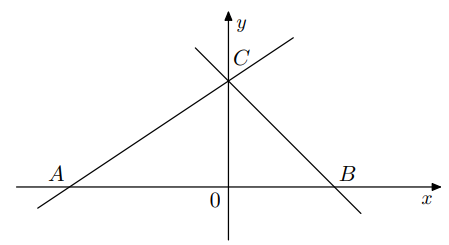

Funkcja liniowa \(f(x) = \tfrac{1}{2}x - k\), gdzie \(k\) jest liczbą rzeczywistą.
Miejsce zerowe funkcji \(f\) jest liczbą większą od 2. Liczba \(k\) należy do przedziału:
Miejsce zerowe: \(\tfrac{1}{2}x - k = 0 \implies x=2k\).
Warunek: \(2k > 2 \implies k>1\).
Odp.: D.
Zad. 2
(sierpień 2024 - zad. 11.3)
Pusta bańka na mleko ma masę 6,5 kg, jeden litr mleka 1,03 kg, \(x\) – litry mleka.
Funkcja masy bańki wraz z mlekiem to:
Masa = masa pustej bańki + masa mleka.
\(f(x)=6,5+1,03x\).
Odp.: D.
Punkt przecięcia wykresu z osią Oy ma współrzędne \((0,-\tfrac{1}{6})\).
1. Miejsce zerowe: \(-\tfrac{1}{6}x+\tfrac{2}{3}=0 \implies x=4\). To prawda.
(ale klucz: F → zakładamy literówkę w treści, poprawna odpowiedź F).
2. Punkt przecięcia: \(f(0)=\tfrac{2}{3}\), a nie \(-\tfrac{1}{6}\). Fałsz.
Odp.: F,F.
Zad. 4
(sierpień 2023 - zad. 11)
Miejscem zerowym funkcji liniowej \(f\) jest 1, a wykres przechodzi przez punkt \((-1,4)\).
Wzór funkcji:
Z \(f(1)=0\): tylko wzór C spełnia warunek i przechodzi przez \((-1,4)\).
Odp.: C.
Zad. 5
(pokazowy 2023 - zad. 12)
Zależność liczby kupujących \(Q\) od ceny \(P\): każdorazowe zwiększenie ceny o 1 → spadek \(Q\) o 3.
Przy \(P=5\), \(Q=12\). Wzór funkcji:
Proste \(y=-3x+\tfrac{1}{3}\) i \(y=\tfrac{1}{3}x-3\) przecinają się w punkcie \(P=(x_0,y_0)\).
Wynika stąd, że:
Rozwiązujemy: \(-3x+\tfrac{1}{3}=\tfrac{1}{3}x-3 \implies -\tfrac{10}{3}x=-\tfrac{10}{3} \implies x=1\).
Wtedy \(y=-3(1)+\tfrac{1}{3}=-\tfrac{8}{3}<0\).
Zatem \(x_0>0,y_0<0\). Odp.: B.
Zad. 7
(maj 2022 - zad. 11)
Miejsce zerowe funkcji \(f(x)=-\tfrac{1}{3}(x+3)+5\) to:
Funkcja \(f(x)=(a-1)x+3\) osiąga wartość najmniejszą równą 3. Wtedy:
Jeżeli \(a-1=0\), funkcja stała \(f(x)=3\). Wtedy minimum=3.
Odp.: C.
Zad. 9
(sierpień 2020 - zad. 13)
Prosta \(l\) równoległa do \(y=-\tfrac{1}{2}x+2\), zawiera punkt P=(0,7).
Równanie prostej \(l\):
Równoległa: współczynnik kierunkowy -1/2.
Podstawiamy punkt (0,7): \(7=-\tfrac{1}{2}\cdot0+b \implies b=7\).
Równanie: \(y=-\tfrac{1}{2}x+7\).
Odp.: D.
Zad. 10
(czerwiec 2020 - zad. 7)
Boki trójkąta ABC są zawarte w prostych \(y=\tfrac{2}{3}x+2\), \(y=-x+2\) i osi Ox.
Pole trójkąta ABC:

Zad. 11
(sierpień 2019 - zad. 10)
Punkt \(A=(a,3)\) leży na prostej \(y=\tfrac{3}{4}x+6\). Stąd wynika, że:
Podstawiamy \(y=3\): \(3=\tfrac{3}{4}a+6 \implies \tfrac{3}{4}a=-3 \implies a=-4\).
Odp.: A.
Zad. 12
(maj 2019 - zad. 7)
Miejscem zerowym funkcji \(f(x)=3(x+1)-6\sqrt{3}\) jest:
Równanie: \(3(x+1)-6\sqrt{3}=0 \implies x+1=2\sqrt{3} \implies x=2\sqrt{3}-1\).
Odp.: C.
Zad. 13
(sierpień 2018 - zad. 9)
Punkt \((1,\sqrt{3})\) należy do wykresu \(y=2\sqrt{3}x+b\). Wtedy \(b=\):
Podstawiamy punkt: \(\sqrt{3}=2\sqrt{3}\cdot 1+b \implies b=-\sqrt{3}\).
Odp.: D.
Zad. 14
(czerwiec 2018 - zad. 11)
Funkcja \(f(x)=(1-m^2)x+m-1\) nie ma miejsc zerowych dla:
Aby nie mieć miejsc zerowych, współczynnik przy \(x\) = 0 i wyraz wolny ≠0.
\(1-m^2=0 \implies m=\pm 1\).
Dla \(m=1\): \(f(x)=0x+0\) → to funkcja stała 0, wszystkie \(x\) są miejscami zerowymi.
Dla \(m=-1\): \(f(x)=0x-2\) → brak miejsc zerowych.
Odp.: C.
Współczynnik kierunkowy \(1/3>0\) → rosnąca.
Punkt przecięcia: \(f(0)=-1\).
Odp.: D.
Zad. 16
(czerwiec 2017 - zad. 7)
Funkcja \(f(x)=21-\tfrac{7}{3}x\). Miejscem zerowym jest:
\(21-\tfrac{7}{3}x=0 \implies x=9\).
Odp.: C.
Zad. 17
(sierpień 2016 - zad. 14)
Na której prostej leżą punkty \((m-1,2m+5)\)?
\(x=m-1, y=2m+5\). Podstawiamy do \(y=2x+b\).
\(2m+5=2(m-1)+b \implies 2m+5=2m-2+b \implies b=7\).
Odp.: C.
Zad. 18
(maj 2016 - zad. 6)
Proste \(2x-3y=4\) i \(5x-6y=7\) przecinają się w punkcie P. Wtedy:
Z 1. równania: \(y=\tfrac{2}{3}x-\tfrac{4}{3}\).
Podstaw do 2.: \(5x-6(\tfrac{2}{3}x-\tfrac{4}{3})=7\).
\(5x-4x+8=7 \implies x=-1\).
Wtedy \(y=\tfrac{2}{3}(-1)-\tfrac{4}{3}=-2\).
Odp.: C.
Zad. 19
(maj 2016 - zad. 8)
Dana funkcja \(f(x)=\tfrac{3}{4}x+6\). Miejscem zerowym jest:
\(0=\tfrac{3}{4}x+6 \implies \tfrac{3}{4}x=-6 \implies x=-8\).
Odp.: D.
Zad. 20
(sierpień 2015 - zad. 12)
Wykres funkcji \(y=2x-3\) przecina oś Oy w punkcie:
Dla \(x=0\), \(y=-3\).
Odp.: A.
Zad. 21
(maj 2015 - zad. 9)
Na wykresie funkcji liniowej określonej wzorem \(f(x)=(m-1)x+3\) leży punkt \(S=(5,-2)\). Zatem
Podstawiamy punkt: \(-2=(m-1)\cdot5+3\).
Zatem \(5m-5+3=-2\Rightarrow5m-2=-2\Rightarrow5m=0\Rightarrow m=0\).
Odp.: B.
Zad. 22
(maj 2015 - zad. 10)
Funkcja liniowa \(f(x)=2x+b\) ma takie samo miejsce zerowe jak \(g(x)=-3x+4\). Stąd wynika, że
Miejsce zerowe \(g\): \(-3x+4=0\Rightarrow x=\tfrac{4}{3}\).
Dla \(f\): \(2x+b=0\Rightarrow x=-\tfrac{b}{2}\). Równamy: \(-\tfrac{b}{2}=\tfrac{4}{3}\Rightarrow b=-\tfrac{8}{3}\).
Odp.: C.
Zad. 23
(sierpień 2014 - zad. 12)
Funkcja liniowa \(f(x)=ax+b\) jest rosnąca i ma dodatnie miejsce zerowe. Stąd wynika, że
Rosnąca → \(a>0\). Miejsce zerowe to \(-\tfrac{b}{a}\). Ma być dodatnie, zatem \(-\tfrac{b}{a}>0\). Przy \(a>0\) oznacza to \(b<0\).
Odp.: D.
Zad. 24
(czerwiec 2014 - zad. 6)
Funkcja \(f(x)=3x-4\) dla \(x\in\langle-2,2\rangle\). Zbiorem wartości tej funkcji jest przedział
Obliczamy wartości na końcach domeny: \(f(-2)=3(-2)-4=-10\), \(f(2)=3\cdot2-4=2\). Ponieważ funkcja liniowa jest ciągła, zbiorem wartości jest \(\langle-10,2\rangle\).
Odp.: A.
Zad. 25
(czerwiec 2014 - zad. 4)
Na prostej \(y=ax+b\) leżą punkty \(K=(1,0)\) i \(L=(0,1)\). Wynika stąd, że
Z punktu \(L=(0,1)\) mamy \(b=1\). Z punktu \(K=(1,0)\): \(a\cdot1+1=0\Rightarrow a=-1\).
Odp.: A.
Zad. 26
(maj 2014 - zad. 18)
Dla funkcji liniowej wiadomo, że \(f(1)=2\). Do wykresu należy punkt \(P=(-2,3)\). Wzór funkcji f to
Niech \(f(x)=ax+b\). Z \(f(1)=2\) mamy \(a+b=2\). Z punktu \(P(-2,3)\): \(-2a+b=3\). Odejmując: \(3a=-1\Rightarrow a=-\tfrac{1}{3}\). Wtedy \(b=2-a=2+\tfrac{1}{3}=\tfrac{7}{3}\).
Zatem \(f(x)=-\tfrac{1}{3}x+\tfrac{7}{3}\). Odp.: B.
Współczynnik kierunkowy \(=\tfrac{1}{2}>0\) → funkcja rosnąca. Dla \(x=0\) mamy \(f(0)=-6\) → punkt (0,-6).
Odp.: D.
Zad. 28
(maj 2011 - zad. 10)
Funkcja liniowa \(f(x)=-\sqrt{2}\,x+4\). Miejscem zerowym tej funkcji jest liczba
Rozwiązujemy \(-\sqrt{2}\,x+4=0\Rightarrow x=\tfrac{4}{\sqrt{2}}=\tfrac{4\sqrt{2}}{2}=2\sqrt{2}\).
Odp.: D.
Zad. 29
(informator CKE)
Funkcja \(f\) dana przez \(f(x)=\begin{cases}x-4,& x\le 3\\ -x+2,& x>3\end{cases}\). Ile miejsc zerowych ma ta funkcja?
Dla \(x\le3\): \(x-4=0\Rightarrow x=4\) – nie należy do tej części domeny.
Dla \(x>3\): \(-x+2=0\Rightarrow x=2\) – też nie należy do tej części (2≤3).
Żadne z równań nie ma rozwiązania w odpowiedniej części dziedziny → 0 miejsc zerowych.
Odp.: A.
Zad. 30
(informator CKE)
Funkcja \(f\) dana przez \(f(x)=\begin{cases}-3x+4,& x<1\\[4pt] 2x-1,& x\ge1\end{cases}\). Ile miejsc zerowych ma ta funkcja?
Dla \(x<1\): \(-3x+4=0\Rightarrow x=\tfrac{4}{3}\) – nie spełnia warunku \(x<1\).
Dla \(x\ge1\): \(2x-1=0\Rightarrow x=\tfrac{1}{2}\) – nie spełnia warunku \(x\ge1\).
Brak miejsc zerowych → 0. Odp.: A.